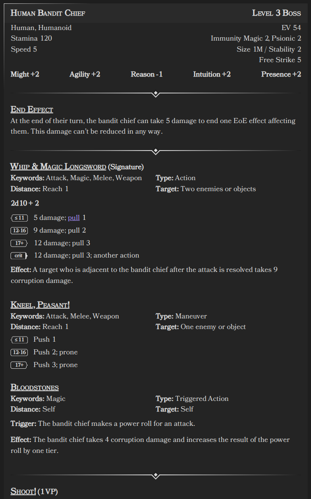

Statblock Element¶
The Statblock codeblock is a tool designed to parse and display statblocks within Obsidian. It allows you to define creatures or characters with various characteristics, stats, features, and more using YAML syntax, and then renders this information in an organized layout for easy reference during gameplay or writing.

Usage¶
To use the Statblock Processor, insert a code block with the language identifier ds-statblock in your Obsidian note,
and then define your statblock using YAML syntax inside the code block.
Example statblock
~~~ds-statblock
type: statblock
name: Human Bandit Chief
level: 3
roles:
- Leader
ancestry:
- Human
- Humanoid
ev: "20"
stamina: "120"
immunities:
- Corruption 4
- psychic 4
speed: 5
size: 1M
stability: 2
free_strike: 5
might: 2
agility: 3
reason: 2
intuition: 3
presence: 2
features:
- type: feature
feature_type: ability
name: Whip and Magic Longsword
icon: 🗡
ability_type: Signature Ability
keywords:
- Magic
- Melee
- Strike
- Weapon
usage: Main action
distance: Melee 2
target: Two enemies or objects
effects:
- roll: Power Roll + 2
tier1: 8 damage; pull 1
tier2: 12 damage; pull 2
tier3: 15 damage; pull 3
- name: Effect
effect: Any target who is adjacent to the bandit chief after the power roll is
resolved takes 3 corruption damage.
- cost: 2 Malice
effect: This ability targets one additional target.
- type: feature
feature_type: ability
name: Kneel, Peasant!
icon: 🗡
keywords:
- Melee
usage: Maneuver
distance: Melee 1
target: One enemy
effects:
- roll: Power Roll + 2
tier1: Push 1; M < 1 prone
tier2: Push 2; M < 2 prone
tier3: Push 4; M < 3 prone
- cost: 2 Malice
effect: The ability takes the Area keyword, loses the Melee keyword, and is a 1
burst that targets each enemy in the area.
- type: feature
feature_type: ability
name: Bloodstones
icon: ❗️
keywords:
- Magic
usage: Triggered action
distance: Self
target: Self
trigger: The bandit chief makes a power roll.
effects:
- name: Effect
effect: The bandit chief takes 5 corruption damage and increases the outcome of
the power roll by one tier. This damage can't be reduced in any way.
- type: feature
feature_type: trait
name: End Effect
icon: ⭐️
effects:
- effect: At the end of each of their turns, the bandit chief can take 5 damage to
end one effect on them that can be ended by a saving throw. This
damage can't be reduced in any way.
- type: feature
feature_type: trait
name: Supernatural Insight
icon: ⭐️
effects:
- effect: The bandit chief ignores concealment if it's granted by a supernatural
effect.
- type: feature
feature_type: ability
name: Shoot!
icon: ☠️
ability_type: Villain Action 1
keywords:
- Area
usage: "-"
distance: 10 burst
target: Each artillery ally in the area
effects:
- name: Effect
effect: Each target makes a ranged free strike.
- type: feature
feature_type: ability
name: Form Up!
icon: ☠️
ability_type: Villain Action 2
keywords:
- Area
usage: "-"
distance: 10 burst
target: Each ally in the area
effects:
- name: Effect
effect: Each target shifts up to their speed. Additionally, until the end of the
encounter, while the bandit chief or any ally is adjacent to a target,
they have damage immunity 2.
- type: feature
feature_type: ability
name: Lead From the Front
icon: ☠️
ability_type: Villain Action 3
keywords:
- "-"
usage: "-"
distance: Self
target: Self
effects:
- name: Effect
effect: The bandit chief shifts up to 10 squares regardless of their speed.
During or after this movement, they can use their Whip and Magic
Longsword against up to four targets. Additionally, one ally adjacent
to each target can make a free strike against that target.
~~~

Field Definitions¶
Below is a detailed description of each field used in the statblock, including their types, default values, and whether they are required.
| Property | Type | Required | Default | Description |
|---|---|---|---|---|
name |
string | Yes | - | The name of the creature. |
type |
string | Yes | "statblock" | Static string "statblock" |
level |
integer | No | 0 | The creature's level. |
roles |
string[] | Yes | [] | Roles assigned to the creature (e.g., Boss, Minion). |
ancestry |
string[] | Yes | [] | Ancestries or types the creature belongs to (e.g., Human, Humanoid). |
ev |
string | Yes | "0" | Encounter Value (EV) of the creature. |
stamina |
string | Yes | 0 | The creature's max stamina. |
immunities |
string[] | No | [] | List of immunities (e.g., Magic 2, Psionic 2). |
weaknesses |
string[] | No | [] | List of weaknesses (e.g., acid 3, holy 1). |
speed |
integer | Yes | "" | Movement speed of the creature (e.g., 5). |
movement |
string | No | "" | Movement types of the creature (e.g. 'run, fly') |
size |
string | Yes | "" | Size category (e.g., 1M for medium). |
stability |
integer | Yes | 0 | Stability value of the creature. |
free_strike |
integer | Yes | 0 | The free strike value. |
might |
integer | Yes | 0 | Might modifier. |
agility |
integer | Yes | 0 | Agility modifier. |
reason |
integer | Yes | 0 | Reason modifier. |
intuition |
integer | Yes | 0 | Intuition modifier. |
presence |
integer | Yes | 0 | Presence modifier. |
with_captain |
string | No | - | Effect when a captain is present. |
features |
Feature[] | No | [] | List of features (see Feature schema). |
Notes:
- Attribute values can be positive or negative integers. You can include a
+sign for positive values (e.g.,+2), but it's optional.
Features¶
See the features documentation for field definitions